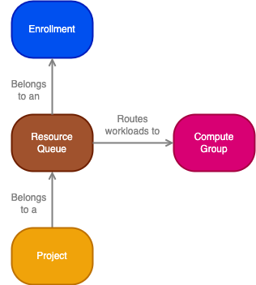
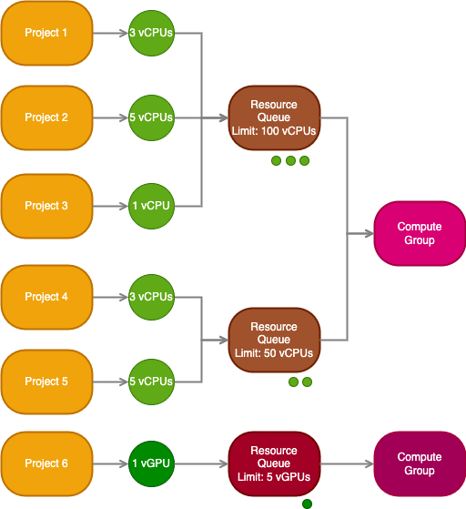
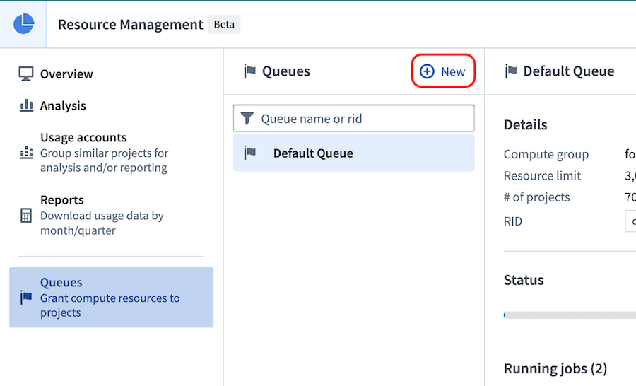
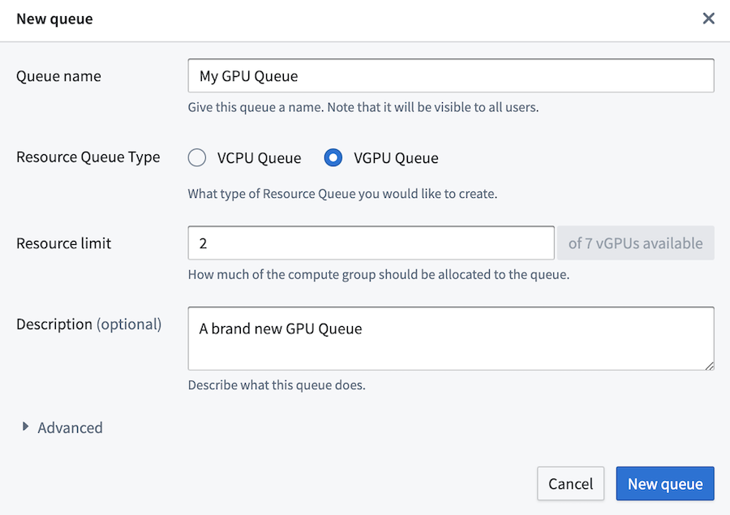
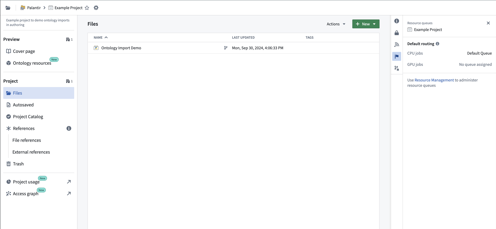
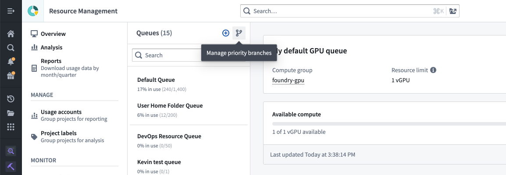
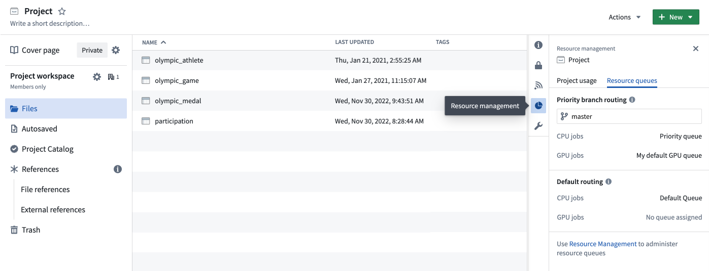
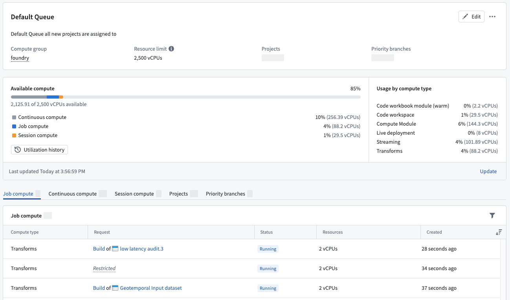
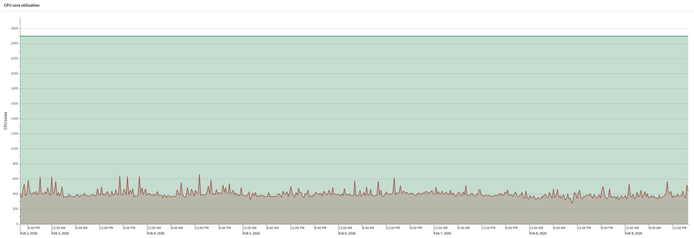

Resource queues are used to limit the available compute resources that can be utilized concurrently. Examples of compute resources include virtual CPUs (vCPUs) and virtual GPUs (vGPUs).

:::callout{theme="warning"} Resource queues for streaming resources may not be available in your enrollment. Contact Palantir Support for more information. :::
Resource queues belong to an enrollment, and an enrollment has a vCPU and a vGPU limit, which limits the total amount of vCPUs and vGPUs allowed through resource queues. In other words, the sum of all vCPU limits of all resource queues in an enrollment must be less than or equal to the enrollment vCPU limit; the same rule applies to the queue vGPU limit and enrollment vGPU limit.
An enrollment also has a default queue to which all projects are automatically assigned unless otherwise specified. This default queue cannot be deleted.
Projects in a space are automatically assigned to the space's default resource queue. The space's default resource queue is the same as the enrollment default resource queue unless otherwise configured. Learn more about Organizations and spaces and how they relate to Organizations and enrollments.
Contact Palantir Support to modify your enrollment limits.

A resource queue is a first in, first out (FIFO) queue used to limit the number of compute resources that can be used concurrently. A resource queue limits the use of service-level resources like virtual CPUs (vCPUs) and virtual GPUs (vGPUs) that are available in compute groups.
Resources are requested by workloads running in projects, and those requests are then queued in a resource queue. When a resource queue is full, requests must wait until space is available again in the queue. The queue is first in, first out; requests are processed in the order in which the requests were created.
Workloads are then sent to run in the compute group specified by the resource queue, and resources are released once the workload completes or is terminated.
To create a resource queue, navigate to the Resource Management application, select Queues on the left, then select New.

There are currently two resource queue types: vCPU resource queues and vGPU resource queues. Most workloads will only need CPUs, and so most projects will be backed by a vCPU resource queue. Workloads requiring GPUs must be sent to a vGPU resource queue, and so can only run in projects backed by a vGPU resource queue. The type of GPUs (for example, V100, T4) used by the workload in a project is determined by the compute group to which the workload will be routed. This compute group is associated with the resource queue that backs the project. Learn more about compute groups.
If you want to use a GPU in your project, you must create a GPU resource queue and assign your project to that queue. It may be useful to use a GPU when running workloads for training machine learning models, for example. Learn more about model integration. Learn more about how to use GPUs for model training in the GPU training documentation.

:::callout{theme="warning"} Be sure your enrollment level GPU limits are set to allow the creation of GPU resource queues. :::
Once the resource queue is created and your project is assigned, import a GPU profile (such as DRIVER_GPU_ENABLED) into your project and use it in your code repository. Learn more about importing spark profiles.
Each project is assigned to a vCPU resource queue; optionally, projects can also be assigned to a vGPU resource queue. If a project is not assigned to a vGPU queue, then it cannot execute workloads that require GPUs.
To view and manage the projects that are assigned to a resource queue, select the Projects tab while viewing the details for that queue. A project's resource queue assignments can also be viewed in the Resource management tab in the platform filesystem sidebar.

Priority branches are used to support critical workflows that require dedicated compute resources. For example, it may be acceptable for workloads to queue during development but not in production. Consider using a protected branch from Code Repositories or Pipeline Builder as a priority branch.
When a priority branch is configured for a project, workloads on that branch use the resource queues that are assigned to the priority branch. All other workloads continue to use the resource queues that are assigned to the project. Like projects, each priority branch is assigned to a vCPU resource queue, and they can also optionally be assigned to a vGPU resource queue.
To view or manage the priority branch settings for a project, select the branching icon shown below:

A project's priority branch settings can also be viewed in the Resource management tab in the platform filesystem sidebar.

To view and manage the priority branches that are assigned to a resource queue, select the Priority branches tab while viewing the details for that queue.
Compute groups are auto scaling groups of hardware resources of homogeneous type. For example, a compute group might have machines with 16GB of memory and 4 compute cores (CPUs) available; another compute group may have machines with a V100 GPU with 16 compute cores and 32GB of memory. Compute groups are available to Foundry users and limited by resource queues.
Each resource queue can guard Job compute, Continuous compute, and Session compute:
The Resource Management application shows the granular split of your resource queue usage across different compute types.

:::callout{theme="warning"} Resource queue utilization does not represent all Foundry compute usage, and resource queues are not spending caps. Ontology indexing (Funnel) compute that is scheduled outside a resource queue does not appear in resource queue utilization, but remains visible in Analysis. To inspect this usage, select Ontology indexing (Funnel) as the Source, or group by Source. Use Analysis to monitor total usage and Budgets to monitor spend. :::
The Utilization history option on the resource queue page shows the utilization of the resource queue over the past 7 days. It shows the amount of used vCPU or vGPU cores compared to the maximum available cores on the queue. This can be used to determine whether a resource queue is close to capacity. If the queue is consistently close to being full, consider increasing the amount of cores in the resource queue.

A resource queue that reaches capacity causes all new workloads to wait, resulting in delayed builds and poor user experience. To be alerted before this happens, select Create monitor to configure a utilization monitor in the Data Health application.